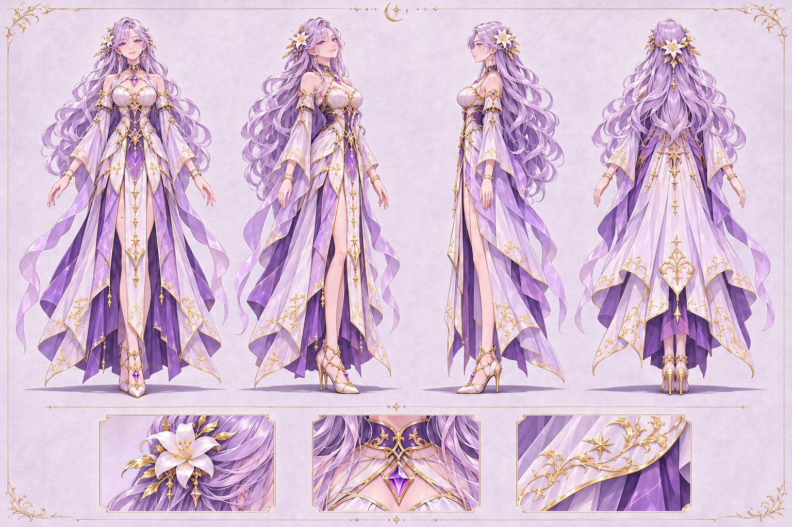
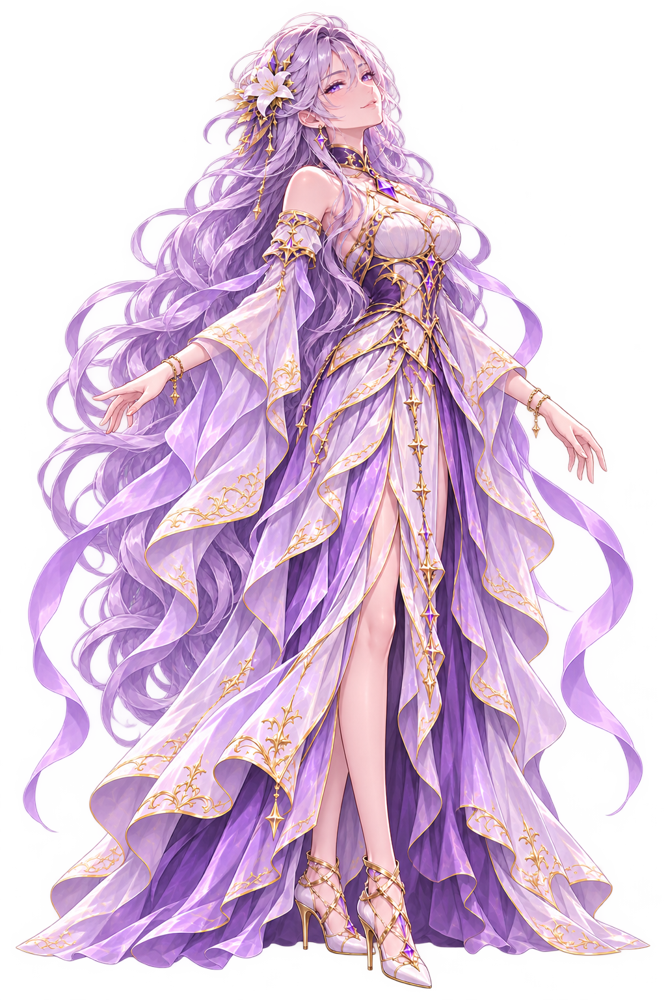
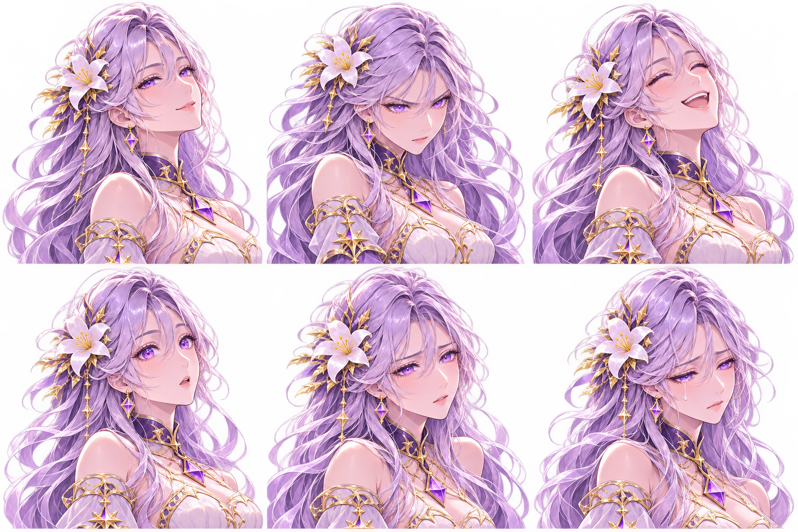
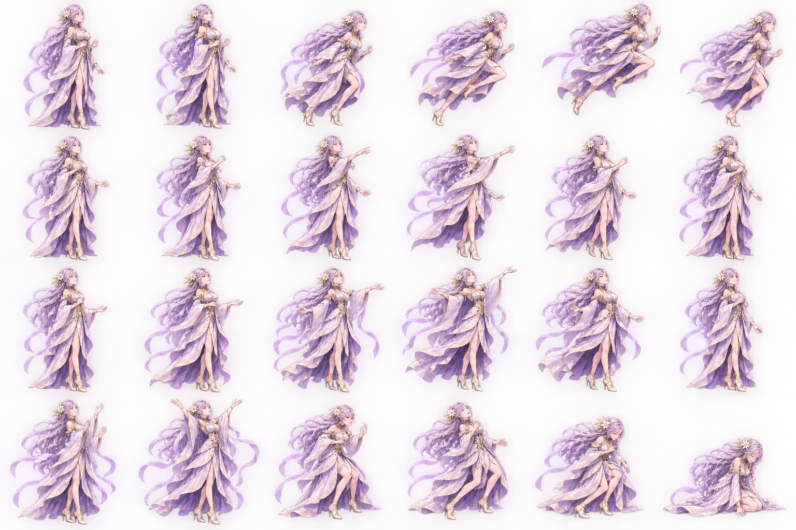
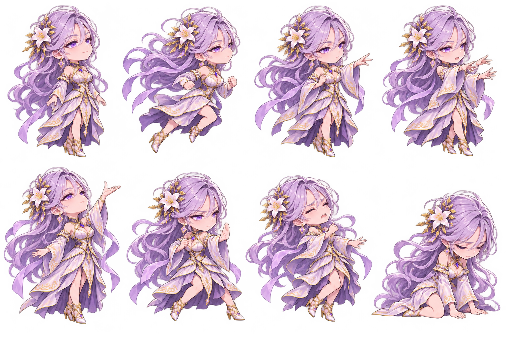
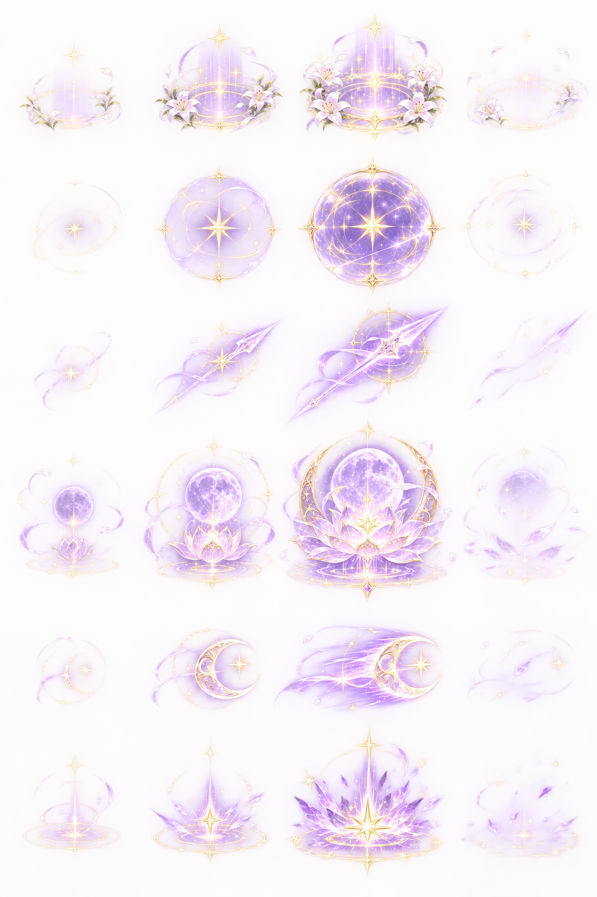

Selena · Character Art CollectionATERNAL SENIA · CHARACTER ART BENCHMARKSelena
Ánh trăng, hoa lily và những vì sao. Bộ thiết kế nhân vật để xem và tham khảo chất lượng cho các hero tiếp theo.
Thiết kế nguồn và key pose · Chưa tích hợp gameplay.
 01 · Tranh chủ đạo
01 · Tranh chủ đạo

02 · Bốn góc và chất liệu

03 · Nhân vật riêng

04 · Sáu biểu cảm

05 · Nghiên cứu chuyển động · 24 tư thế

06 · Chibi chiến đấu · 8 key pose
 07 · Trượng trăng–sao
07 · Trượng trăng–sao
 08 · Sáu icon kỹ năng
08 · Sáu icon kỹ năng

09 · Sáu họ hiệu ứng